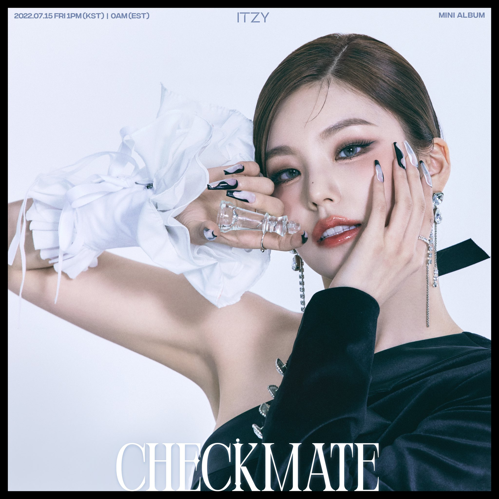

황예지의 BIO하고 사진
| BIO | 사진 |
|---|---|
|
황예지(黃禮之)는 대한민국의 가수이자 래퍼이다. 그녀는 한국의 걸그룹 ITZY의 리더이다. 그녀는 2000년 5월 26일 대한민국 전주시에서 태어났다. 2019년 1월 20일, ITZY의 리더로 공식 발표되었다. 그녀의 공개에 앞서, 그녀는 세컨드 20's (tvN, 2015), 스트레이 키즈 (Mnet, 2017), 더 팬 (SBS, 2018)을 포함한 여러 프로덕션에서 카메오로 출연했다. 데뷔 후, 그녀는 MBC의 쇼에도 출연했다! 뮤직스코어 2021년 스페셜 MC로 나왔다. |
 |